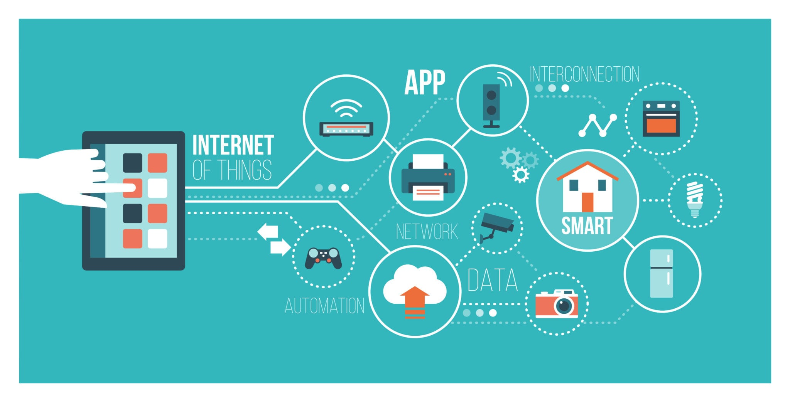
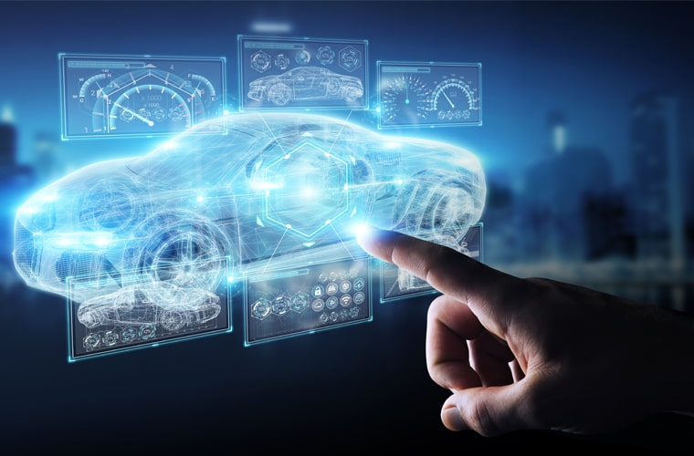

Introduction to Internet of Things
The Internet of Things (IoT) refers to the network of physical objects or "things" embedded with sensors, software, and connectivity, enabling them to collect and exchange data. These interconnected devices can range from everyday objects like household appliances and wearables to complex industrial machinery and infrastructure. The essence of IoT lies in its ability to seamlessly connect the physical and digital worlds, allowing for the creation of intelligent systems that gather real-time information and enable smart decision-making. By harnessing the power of IoT, businesses and individuals can unlock numerous benefits, including enhanced efficiency, improved safety, optimized processes, and the ability to create innovative services and experiences. As IoT continues to advance, it has the potential to reshape industries, transform cities into smart ecosystems, and revolutionize the way we live, work, and interact with our environment.
Learn MoreWireless Communication

Wireless communication is a technology that enables the transfer of information between devices without the need for physical wired connections. It relies on the use of electromagnetic waves, such as radio frequencies, to transmit data over the air. This form of communication has revolutionized the way we connect and interact with each other and the world around us. With wireless communication, we can effortlessly access the internet, make phone calls, send messages, stream media, and exchange data across various devices, including smartphones, laptops, tablets, and IoT devices. The widespread adoption of wireless communication has provided us with the freedom and convenience to stay connected regardless of our physical location. From Wi-Fi networks to cellular networks like 3G, 4G, and now 5G, wireless communication continues to evolve, offering faster speeds, broader coverage, and more reliable connectivity. It has become an essential aspect of our daily lives, empowering us with seamless and ubiquitous communication capabilities.
Learn MoreAdvanced Wireless Communication

Advanced wireless communication encompasses the latest developments and technologies that push the boundaries of wireless connectivity. It represents the cutting-edge innovations in the field, enabling faster speeds, improved reliability, and enhanced capabilities for data transmission. One of the significant advancements is the deployment of 5G networks, which brings ultra-fast speeds, low latency, and massive device connectivity. 5G is poised to revolutionize industries and enable transformative applications such as autonomous vehicles, remote surgery, smart cities, and immersive virtual reality experiences. Additionally, advanced wireless communication includes emerging technologies like millimeter-wave (mmWave) communication, which operates in higher frequency bands and offers even greater speeds and capacity. These advancements pave the way for a future where wireless communication becomes the backbone of our increasingly connected world, enabling seamless integration of devices, services, and experiences in ways we have never seen before.
Learn More5G Technologies and Applications
5G technologies represent the next generation of wireless communication, offering unprecedented speed, capacity, and connectivity. With speeds up to 100 times faster than 4G, 5G enables near-instantaneous data transfer and low latency, transforming the way we connect and interact with the world. Beyond faster download and upload speeds, 5G opens up a wide range of applications across various industries. For instance, in healthcare, 5G can support real-time remote surgeries, enable telemedicine services, and facilitate the rapid transfer of large medical data sets for diagnostics. In transportation, 5G can power autonomous vehicles, enhance road safety through vehicle-to-vehicle communication, and enable smart traffic management systems. Smart cities can leverage 5G to improve energy efficiency, optimize public services, and enhance urban planning. The applications of 5G are vast and extend to entertainment, education, manufacturing, and beyond, revolutionizing industries and shaping the future of connectivity.
Learn MoreIntelligent and Autonomous Systems
Intelligent and autonomous systems represent the forefront of technological innovation, combining artificial intelligence, machine learning, and robotics to create advanced systems capable of perceiving, analyzing, and making decisions in real-time. These systems are designed to operate independently, adapting to changing environments and carrying out complex tasks without human intervention. Intelligent and autonomous systems find applications in various fields, such as manufacturing, transportation, healthcare, and agriculture. In manufacturing, autonomous robots can streamline production processes, improve efficiency, and ensure consistent quality. In transportation, intelligent systems can power self-driving cars, optimizing road safety, and revolutionizing the way we travel. In healthcare, intelligent systems can aid in diagnostics, assist in surgeries, and enhance patient care through personalized treatment plans. As these technologies continue to advance, we can expect to see even more sophisticated and capable systems that redefine the possibilities of automation and intelligence.
Learn MoreDigital Twins: Concepts and Applications
Digital twins have emerged as a powerful concept in the realm of technology, enabling a virtual replica or representation of physical objects, processes, or systems. By leveraging data from sensors, IoT devices, and real-time monitoring, digital twins create a digital counterpart that mirrors the behavior, characteristics, and performance of their physical counterparts. This technology allows for deep insights, analysis, and simulation in various domains. Digital twins find applications in industries such as manufacturing, healthcare, urban planning, and energy management. In manufacturing, digital twins facilitate predictive maintenance, optimize production workflows, and simulate scenarios for improved efficiency. In healthcare, digital twins aid in personalized medicine, enabling precise treatment plans and disease management. As technology advances, digital twins will continue to evolve, revolutionizing industries and shaping the future of modeling and simulation.
Learn More